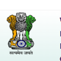
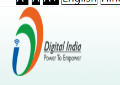
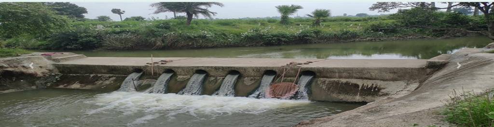

Watershed Command Center
Slide 1/7 • Key Executive Indicators & Surveillance Overview

Watershed Development Component-Pradhan Mantri Krishi Sinchayee Yojana 2.0 - MIS (WDC-PMKSY 2.0)


Jal Drishti synchronizes ground-level geotagged field photos with Sentinel-2 remote sensing imagery to verify water harvesting outcomes and soil moisture enhancement.
Live surveillance evidence cross-referenced with GPS coordinates and SHA-256 anti-tamper hashes
| Project ID | Catchment & District | Status | Structures | Evidence | NDVI Gain | Actions |
|---|---|---|---|---|---|---|
| WD-204 | Chhata Micro-Watershed Development Mathura, Uttar Pradesh |
Under Review | 14 units | 186 photos | +0.37 (0.21 → 0.58) | |
| WD-118 | Fatehabad Arid Land Watershed Project Agra, Uttar Pradesh |
Flagged | 9 units | 94 photos | +0.16 (0.16 → 0.32) | |
| WD-311 | Iglas Rainwater Harvesting Basin Aligarh, Uttar Pradesh |
Verified | 18 units | 240 photos | +0.39 (0.28 → 0.67) | |
| WD-402 | Babina Bundelkhand Recharge Network Jhansi, Uttar Pradesh |
Verified | 22 units | 310 photos | +0.43 (0.18 → 0.61) | |
| WD-505 | Karwi Sub-Catchment Rejuvenation Chitrakoot, Uttar Pradesh |
Verified | 12 units | 135 photos | +0.30 (0.24 → 0.54) | |
| WD-612 | Robertsganj Plateau Drainage Basin Sonbhadra, Uttar Pradesh |
Under Review | 11 units | 108 photos | +0.25 (0.19 → 0.44) |
Automated Bounding Box Demarcation & Siltation Risk Extraction (YOLOv8 + SAM)
Structure verified intact. Spillway crest open, water retention optimal with negligible sediment buildup.
AI bounding boxes identify spillway crest, reservoir basin, and sediment buildup. Used by nodal officers to approve milestone disbursements.
Chhata Micro-Watershed Development (WD-204) • Mathura, Uttar Pradesh — Normalized Difference Vegetation Index: (B08 - B04) / (B08 + B04)
NDVI = (B08 - B04) / (B08 + B04) · Atmospheric Cloud Mask: < 1.8% Scene Average
WATERSHED DEVELOPMENT COMPLIANCE AUDIT REPORT
Field Observation & AI Findings
Recharge check dams and contour bunding across Yamuna sub-basin catchment. Structure intact with proper spillway flow, adequate water impoundment, and minimal siltation buildup.
SHA-256 Hash Digest Validated • Zero Collisions Detected
EXIF GPS matched within 12m of GIS project centroid.